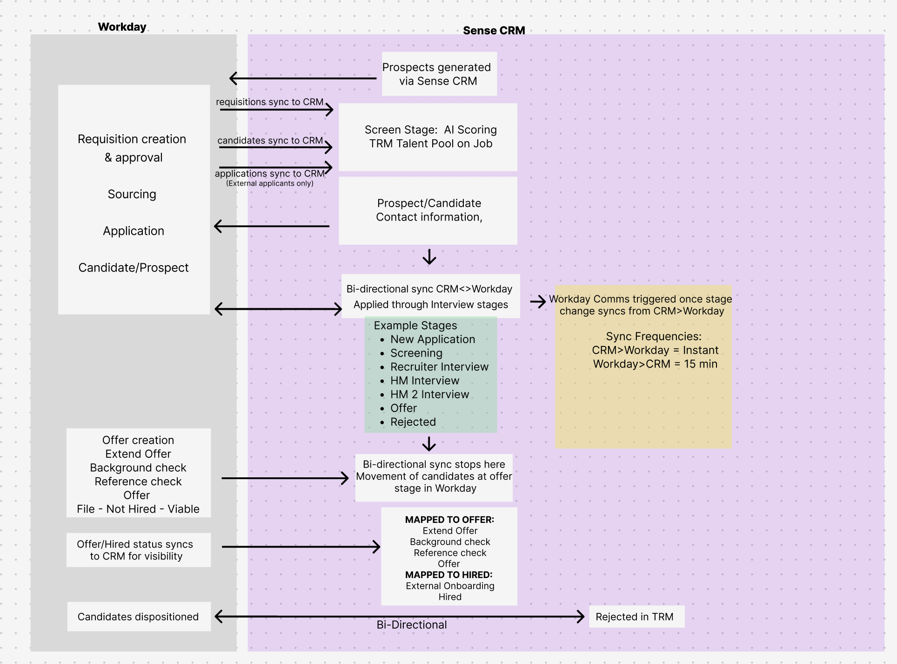

The Challenge
The "N+1" Integration Trap
When we acquired Skillate (TRM), they had zero integrations with the US market ATSs we supported (Workday, Taleo, etc.). Sales was selling "Unified CRM + Automation" packages, but the products were technically siloed.
Building 60 custom integrations for Skillate would have taken years. As you can see from the diagram, a single bi-directional sync requires mapping dozens of touchpoints (Applications, Offers, Hires) across varied latency windows.
Risk Analysis
Estimated Dev Time: 60 Integrations × 3 Months/each = 15 Years (Legacy Roadmap)

The "Trap": A single deep integration (like this Workday flow) is incredibly complex. Replicating this 60x was impossible.